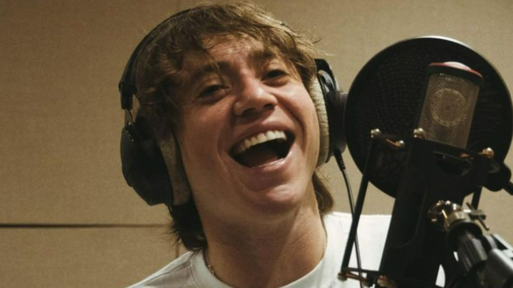

💿 Álbumes Destacados
Homerun (2019)
Su primer álbum de estudio, con temas como “Adán y Eva”, “Tal Vez” y “Forever Alone”.

Back to the Game (2022)
El regreso triunfal de Paulo Londra tras su pausa musical. Un disco con fuerza, identidad y emoción.

Nuevo Proyecto (2025)
Próximamente, un nuevo capítulo en su carrera. Rumores de colaboraciones internacionales y nueva era musical.